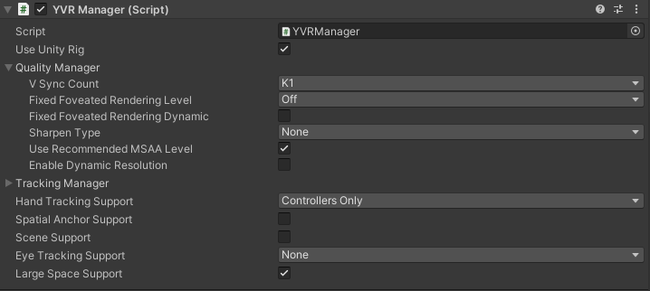

Location Based Entertainment (LBE) Support
Note
For more information, please refer to our open source project LBE Sample.
To utilize LBE-related interfaces, first enable the "Large Space Support" option on the YVRManager script: 
LBE-related interfaces are defined in LBEPlugin and currently include:
| Interface | Description |
|---|---|
| GetGroundDistance | Retrieves the ground distance |
| SetMarkerDetectionEnable | Enables or disables marker detection |
| SetMarkerTrackingUpdateCallback | Registers a callback for marker tracking updates. The callback is triggered when markers are detected, with the parameter containing MarkerTrackingUpdateData structure data |
| SetRecenterEnable | Enables or disables recentering |
| GetRecenterEnable | Gets the current recentering status |
Example of registering a marker callback:
// ...existing code...
LBEPlugin.instance.SetMarkerDetectionEnable(true);
LBEPlugin.instance.SetMarkerTrackingUpdateCallback(OnReceiveMarkerTrackingUpdateData);
private void OnReceiveMarkerTrackingUpdateData(MarkerTrackingUpdateData data)
{
// ...existing code...
}